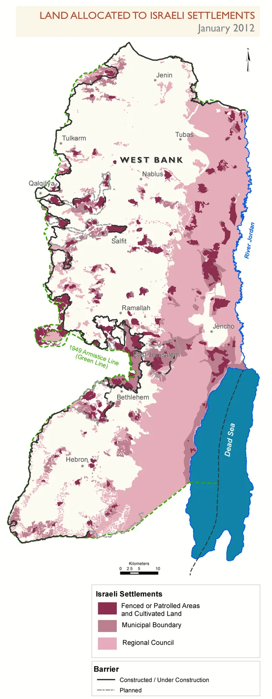

Objectif : montrer le droit comme boussole — ses principes, ce qu’il impose aux parties et aux tiers — et ses limites structurelles : un outil sans gendarme, que la puissance façonne.
Le DIH ne dit pas qui a raison de faire la guerre ; il dit comment on peut la faire — et il protège ceux qui ne la font pas. Sa force : l’universalité (tous les États liés). Sa faiblesse : l’absence d’exécutif mondial. D’où la méthode du chapitre en quatre gestes (doc. de travail) : identifier les principes → comparer les actes des parties à ces principes → observer la réaction des tiers et des institutions → repérer les usages politiques du droit (le mot « droit » comme argument d’autorité dans un récit). Les Conventions protègent toute personne sous occupation, que son État soit reconnu ou non — la non-reconnaissance de la Palestine par certains pays ne change rien à la protection due à sa population.
L’avis de 2024 (affaire 186) est le plus explicite jamais rendu : les 193 États ont l’obligation de ne pas reconnaître la situation issue de l’occupation illégale, de ne pas aider à son maintien, et de coopérer pour y mettre fin (CIJ, 19 juil. 2024 ; doc. de travail). Concrètement, la liste est précise : étiquetage des produits des colonies, exclusion des accords UE-Israël des territoires occupés, refus de visa pour colons violents, fin des préférences douanières non distinguées. En 2025-2026, quelques gestes suivent — la Commission européenne propose le réexamen de l’accord d’association (clause droits de l’homme) ; des Parlements (Espagne, Slovénie, Irlande, Belgique…) adoptent interdictions d’importation ou embargos d’armes — mais l’application reste fragmentaire et souvent annulée par les exécutifs (doc. de travail ; actualité 2025-2026).
Chaque institution a son plafond de verre (doc. de travail) : la CIJ dit le droit — ses avis pèsent comme des recommandations (l’exécution relève du Conseil de sécurité, là où le veto bloque) ; l’Assemblée générale vote massivement (ES-10, rés. 2334 confirmée par 124 voix en 2024…) sans bras exécutif ; le Conseil de sécurité est le seul à pouvoir sanctionner — et le veto américain y a protégé Israël des décennies durant (plus de quarante vetos, dont plusieurs depuis octobre 2023 sur des cessez-le-feu) ; la CPI juge des individus mais n’a pas de police — un mandat d’arrêt vaut si un État coopère ; Israël, les USA et plusieurs alliés ne coopèrent pas — et Washington a sanctionné la Cour elle-même en 2025.
Plus le droit est invoqué, moins il change le terrain : l’accumulation des procédures est aussi le symptôme d’une impasse politique — le forum juridique remplace le forum politique fermé. Ce que la judiciarisation produit malgré tout : une mémoire factuelle d’une précision inégalée (les rapports font foi pour l’avenir) ; une délégitimation progressive (l’avis 2024 a déplacé le débat : l’occupation n’est plus « temporaire », elle est illégale) ; et un langage commun — même les adversaires argumentent désormais en droit. Ce que la sur-judiciarisation masque : l’absence de rapport de force pour appliquer. Le chapitre 10 (processus de paix) bouclera la boucle : sans levier, pas de paix par les mots.
L’argument israélien est massif politiquement après le 7 octobre — 1 200 tués, 250 otages ; et juridiquement borné : l’art. 51 suppose une attaque d’un État (débat sur les groupes armés) ; la CIJ a refusé la lecture israélienne dans l’avis Mur (2004, §139) ; et surtout, la légitime défense ne justifie aucune méthode — proportionnalité, distinction, précaution s’appliquent à chaque frappe, sous n’importe quel titre (CIJ 2004 ; doc. de travail). La position en défense d’Israël existe : le Hamas est une entité de fait gouvernant Gaza (attribuable), l’art. 51 s’adapte aux menaces non étatiques (pratique UK/USA), et les avis CIJ sont consultatifs — objection sérieuse, jamais majoritaire en doctrine (opinions dissidentes de la Cour ; doctrine opposée ; doc. de travail).
| Principe invoqué | Ukraine (depuis 2022) | Palestine (depuis 1967/2023) |
|---|---|---|
| Mandat d’arrêt CPI | Poutine — mars 2023, en quelques mois | Netanyahou, Gallant — nov. 2024 ; et sanctions US contre la CPI en riposte |
| Sanctions | Plusieurs paquets UE, les plus lourds de l’histoire | Quasi aucune ; accords préférentiels maintenus |
| Réfugiés | Protection temporaire immédiate (plusieurs millions) | Diasporas sans statut ; frontières fermées (Égypte, Jordanie, 2024-25) |
| Conseil de sécurité | Veto russe — mais AG mobilisée, coalition large | Veto US — isolement diplomatique de la position palestinienne |
| Médias / opinion | « Résistance héroïque » | « Conflit compliqué », « des deux côtés » |
Le constat du doc. de travail est net : l’application du droit dépend moins de la gravité des violations que des rapports de force. Trois conditions font fonctionner le droit : cohérence (pas de double standard), crédibilité des sanctions, alignement minimal des puissants. Quand une manque, les décisions restent symboliques — un outil de discours, pas de régulation (doc. de travail).
1. Lire — extraits choisis de l’avis (passages sur l’illégalité des colonies et les obligations des tiers) ; relever les termes juridiques et les traduire en langage clair. 2. Cartographier — cartes ou photos satellites de la colonisation avant/après 2024 (Peace Now, B’Tselem Conquer and Divide) ; mesurer l’évolution des blocs, de la route 60 à « E1 ». 3. Analyser — quels principes violés (49(6), droit à l’autodétermination, interdiction de l’annexion) ; quelles obligations pour les tiers (séq. 2). 4. Discuter — pourquoi l’avis ne change-t-il pas le terrain ? Quels obstacles (veto, économie, sécurité, opinion) ; comment les États tiers se sont-ils comportés depuis — la réponse est la leçon du chapitre.

La colonisation est le cas d’école de l’écart droit/réalité : illégale depuis 1967 (rés. 242), confirmée illégale en 2004, 2024 et par le Conseil de sécurité lui-même (2334, 2016 — non veto) — et passée de ~250 000 colons (1993) à ~700 000+ aujourd’hui (Cisjordanie + Jérusalem-Est) : le droit parle, le terrain accélère (doc. de travail ; Peace Now). La sur-judiciarisation sans levier produit ce résultat paradoxal : plus les avis s’accumulent, plus l’annexion de fait avance — car l’absence de coût rend le droit gratuit à violer. C’est la définition même du chapitre : instrumentalisation — par ceux qui détournent le droit pour se légitimer, et par ceux qui l’invoquent pour se dispenser d’agir.
Espace de travail : cette page est le dossier vivant du chapitre — brouillons, activités, sources et repères s’y accumulent, séparément de l’index. Les attributions entre parenthèses dans le texte renvoient aux entrées ci-dessous.
Documents de travail (Drive) — « 7. Instrumentalisation du DI.docx » (document de base de ce chapitre) · « 250407_bibliographie_Pal-Isr.docx » (bibliographie générale de l’équipe) · « 250701_dates clés_ISRAPAL.xlsx » · « 250701_Lexique_ISRAPAL.docx » · dossier racine « 2026_Outil péda_Israël-Palestine ».
DIH et responsabilité des États — Conventions de Genève et Protocole additionnel I (CICR) : distinction, proportionnalité, précaution, interdiction des représailles · Articles de la CDI sur la responsabilité des États (2001) — non-reconnaissance de l’illicite.
Jurisprudences et saisines — affaire 143 (2004 ; §139 légitime défense, §155-159 obligations des tiers) · affaire 186 (19/07/2024) · affaire 192 (génocide, en cours) · affaire 196 (22/10/2025, ONU et UNRWA) · CPI — situation « État de Palestine ».
Résolutions — A/RES/2334 colonisation (2016) · S/RES/242(1967) retrait des territoires (1967).
Asymétrie et sanctions — Mandat CPI Poutine (17/03/2023) ; paquets de sanctions UE Russie (2022-2026) ; directive de protection temporaire 2011/55/UE (activée 2022) — à comparer avec le statut des réfugiés palestiniens · Sanctions américaines contre la CPI (décrets 2025, gel d’actifs du procureur et de juges) · Décompte des vetos US : site « UN Security Council Vetoes » · Pierre d’Argent (UCLouvain), interviews 2024-2025 sur le double standard.